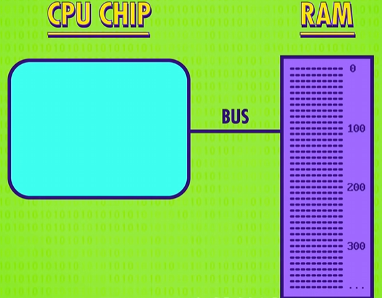
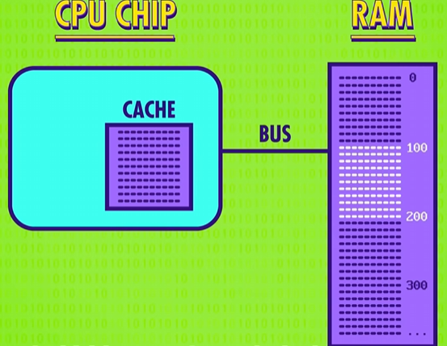
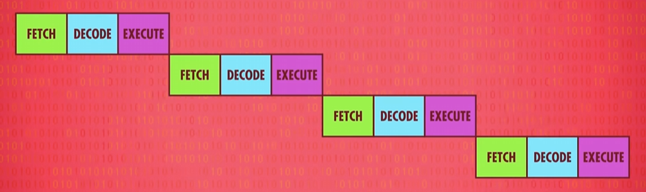
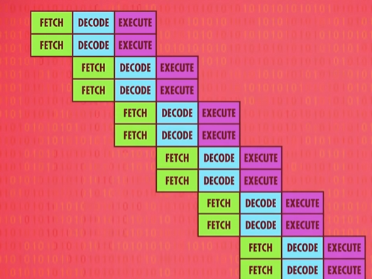
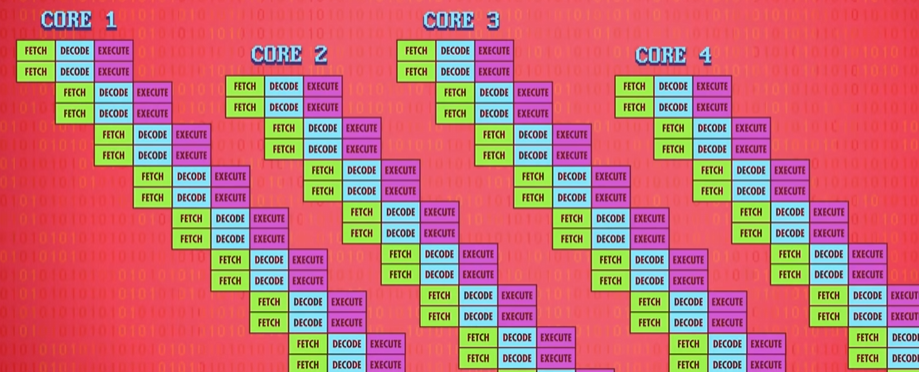

提升 CPU 的速度一直是它的核心问题，为此也衍生出了高级 CPU 的设计。
最早的提升 CPU 速度的方案是加快晶体管切换速度，但这个方案很快遇到瓶颈，毕竟这个层面的提升到了某个程度就很困难了，于是有了后续这些设计。
设计专门的电路处理复杂操作
比如给 CPU 设计专门的除法电路、设计专门的电路来处理图形操作、解码压缩视频、加密文档等
给 CPU 加缓存
随着 CPU 处理指令的能力上涨，性能的瓶颈发生了改变：CPU 需要从 RAM 读取指令用以执行，连接二者的总线的传输效率成为了性能瓶颈，CPU 和 RAM 之间的数据交换被视作是一个慢速的过程（在 CPU 这一层面）：

此外，RAM 本身还要花时间找地址、取数据、配置、输出数据，这进一步拖累了从 RAM 传递数据到 CPU 的过程。一条从内存读数据的指令可能需要几个时钟周期，这造成了 CPU 空等数据。
解决的方案是给 CPU 加缓存，缓存大小通常在 KB 或者 MB 级别，远低于内存的 GB 级别，缓存离 CPU 很近，大小也很小，因此 CPU 直接访问缓存的速度会远高于访问内存。它的原理是在 CPU 从 RAM 拿数据时不在只是拿一条数据，而是将目标数据周围的一块连续内存的数据一起读入缓存。虽然一次性读一批的速度会慢于读一条，但数据通常是一个个按顺序处理，连续内存地址的数据通常具有很强的关联性，因此效率会有很大提升。

CPU 访问缓存拿数据会有两个结果，取到目标数据叫做 Cache Hit （缓存命中），相反叫做 Cache Miss（缓存未命中）。Cache Miss 出现时，CPU 需要重新去内存拿数据，因此减少 Cache Miss 也是性能优化的一个考虑点。
缓存另外还可以用来存一些临时的计算值，比如连续计算时，中间的计算结果可以放在缓存中而不是存回内存，这样会加快计算的速度。但是这样会导致 RAM 和缓存不一致的问题，因此缓存中每块空间设计了一个 “脏位”（Dirty bit），用于标记当前这块内存已经被缓存修改过，在后续清理缓存时，会根据这个脏位来决定是否将缓存内容同步回 RAM 中。
流水线设计
我们知道 CPU 执行指令的过程大概分三步：取指令-解码-执行。如果严格地排队执行，应该是下图这样的情形：

这样的效率比较低下，一条指令需要三个时钟周期来执行（看紫色的Execute的间隔）。由于每个步骤利用的是 CPU 的不同部分，因此可以用并行处理的思路来提高执行效率，即在执行当前指令的同时，解码下一条指令，并且读取下下条指令：

这样一来，单条指令的执行实际只需要一个时钟周期。
流水线设计的一个问题是指令存在执行的依赖关系，举个例子，你在读某个数据，但正在执行的指令会改这个数据，因此一般流水线会计算这个依赖关系，并且在必要时等待以保证不会出错。目前高端的 CPU 会动态排序这些指令来保证执行的依赖关系不会出错，这被称为 “乱序执行”，将流水线的停工时间最小化，这种电路设计非常复杂，尽管存在这种问题，但由于流水线非常高效，几乎所有的现代处理器都使用它。
分支预测
尽管有了流水线，但遇到条件指令还是会造成 CPU 的等待，因为条件指令会打乱执行的顺序，大多数简单的处理器需要等待条件的结果计算完成，才能继续处理指令。
高端的 CPU 设计了分支预测功能来减轻上述问题，CPU 在遇到条件指令时，会预测更加可能的结果，并且根据结果提前将指令放入流水线，这样一旦条件结果计算完成，指令流水线可以立马开始执行。但是如果预测出错，则需要清空流水线并且重新填充指令，但现代处理器的预测正确率已经超过 90%，因此分支预测的提升也不容小觑。
多个 CPU 内部部件
即便有流水线的设计，在指令执行阶段，处理器有些区域还是可能闲置。比如从内存取数据的操作执行时，ALU 是空闲的。因此高级 CPU 设计了多个内部部件，比如有多个 ALU 部件。这样同时执行多条指令，会尽可能用上多的部件。

多核
除了同时执行多条指令外，高级 CPU 允许单个 CPU 同时执行多条指令流水线，这被称为多核，简单来说就是一个 CPU 中有多个处理单元，由于多核之间整合紧密，并且可以共享一些资源，比如缓存，因此它们可以合作运算：

多个独立 CPU
现代处理器通常还设计了多个 CPU ，用以处理多核算力不够的情况，一般常见的有 2 个或者 4 个，我国的 “神威 太湖之光” 超级计算机有 40960 个 CPU，单个 CPU 有 256 个核心